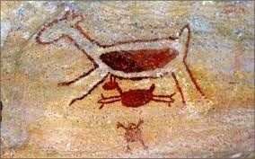

Aqui estão contidos os conteúdos por bimestre:

1º Bimestre: História e construção do conhecimento histórico
2º Bimestre: Processo de hominização e o controle do meio ambiente

3º Bimestre: Terra, poder político e sociedade
4º Bimestre: Fé, religião e ciência